Andrena deconstructed: guide to the characters of the DiscoverLife Andrena key

This set of pages is intended as a companion to the DiscoverLife key to Andrena females. The DL key is not for the faint of heart; it contains 100 trait descriptors, and 521 taxa, likely close to the US total. Though daunting, DL is intended for the non-specialist, people that don't have large collections or fluency in the technical language of taxonomists. The key is mainly in plain English. It offers figures and images to explain characters. It is interactive - a user can winnow down the list of possible matches using only characters they can interpret with some confidence.
However: A new user will struggle, until they have spent a hundred hours thinking hard about the characters, looking up the occasional difficult term, and getting it wrong too many times. At least, that has been my experience. What the key - any key - needs is really clear photos that show what a trait condition looks like under a scope. I've been adding these to the DL key, and I repurpose them here, so that I can show them at hi-res [click images to enlarge], and with explanatory comment.
Navigation:
Vertex | Antenna | Fovea| Clypeus | Malar space | Labral process | Pronotum | Scutum | Propodeum | Wing | Corbicula | Pygidium | Tibia | Scopa | Spurs|
Examples using the DL Guide: A. wilkella (MI) |A. wilkella male (MI) | A. placata (MI) |A. imitatrix (MI) | A. carlini (MI) | A. crataegi (MI) | A. salicifloris (OR) | A. forbesii (MI) | A. nasonii (MI) | A. chlorogaster (OR) | A. carolina male (MI) | A. auricoma (OR) | A. astragali (OR)
Related pages: Glossary of bee terminology | Andrena subgenera of Pacific Northwest | Photo Blog
1) Vertex - the top of the head, above the ocelli
Vertex height (or length) is the distance between a lateral ocellus and the posterior edge of the head. The good thing about this character is that it is always visible, though it is difficult to gauge accurately, even with a reticle.
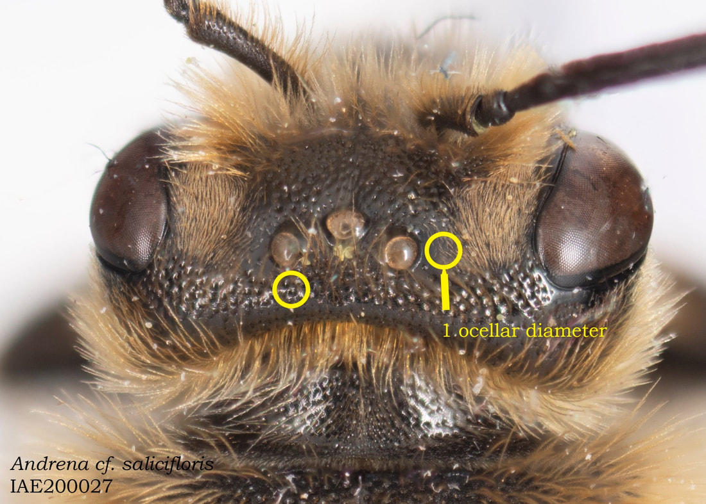
Vertex height of 1 ocellar diameter. Image also shows 1 OD distance from the fovea.
|
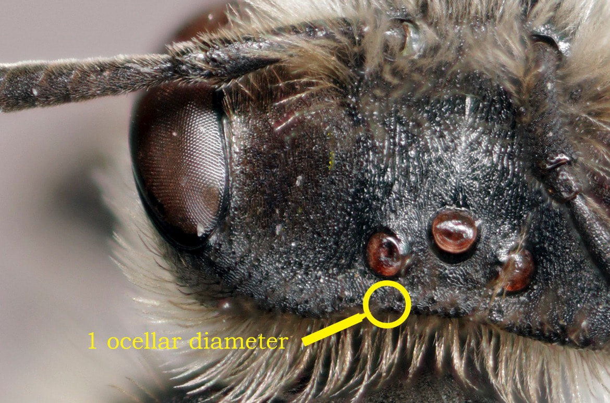
Short vertex, < 1 OD.
|
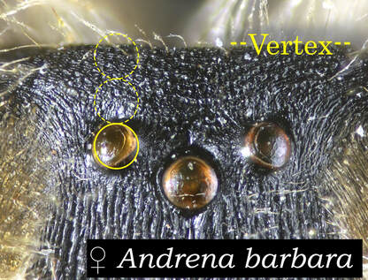
Tall vertex, nearly 2OD.
|
3) Fovea: the areas of depressed hairs medial to the eye
Super important as characters for female Andrena. Tricky to assess for degraded specimens, where facial hairs obscure the fovea, or in poor light. Move the light, move the specimen, trim the hairs. If the fovea are hairless ... perhaps you have a Panurginus.

Fovea dark; length to lower level of antennal socket.
|

Fovea light; width about equal to antennal socket;length nearly to top of clypeus.
|

Fovea narrow, less than width of antennal socket.
|

Fovea narrow, less than width of antennal socket, AND distant by greater than its own width from the eye margin.
|

Fovea moderately impressed; <1 ocellar diameter from ocellus.
|

Fovea is shallow. Dark above, pale below.
|

Fovea is deeply impressed; color: pale.
|
4) Clypeus - the face below the antennal sockets
There are two key traits here. Is the surface texture shiny, roughened, or a both? Is there a an impunctate medial space?

Surface texture completely dulled.
|

The surface texture here transitions from relatively smooth medially to somewhat tesselate ("tiled") laterally. Punctation is sparse.
|

Surface texture shiny medially, dull at edges; distinct impunctate medial band.
|

Shiny; impunctate band; punctures coarse and deep.
|
5) Malar space: the distance between the eye rim and mandible base.
In the DL key, the short malar spaces are described in relation to the eye rim. This the literal rim, not including the band of darker ommatidia. Large malar spaces are described in terms of L x W.

Short: less than eye rim
|

Short, but greater than eye rim.
|

Long, about 1/5 as long as broad.
|

Long, about 1/3 as long as broad.
|
6) Labral Process: a projection immediately below the clypeus.
The characters in DiscoverLife concern length (compared to the labrum) and shape of the margin. The tricky calls here are deciding the boundaries between weakly, emarginate, and bidentate. DL indicates 194 species that might have an entire process. But just 44 that are scored for only having this condition. My suspicion is that DL scores are broad in order to allow for misinterpretation (rather than reflecting within-species variation).

Entire, broadly truncate; long
|

Entire; short
|

Emarginate, but not bidentate.
|

Emarginate. Sam Droege tip: viewed frontally this will appear entire; tipped back, the indentation is visible.
|

Bidentate.
|

Entire, strap-like (A. barbilabris)
|
Labrum, crista and sulcusIf you are well beyond DiscoverLife, and puzzling over the primary literature, you will encounter features of the labrum. This lies immediately beneath the labral process. It may feature a median crista (ridge), and/or sulcus (trough), and additional ornamentation (lamellae). These are difficult to interpret, as the labrum is usually obscured by overlying hairs.
|

Median crista of labrum.
|
7) Pronotum: Surface between mesepisternum and head; "neck."
There are two important characters, particularly useful in discriminating subgenera. The humeral angle is akin to the shoulder when viewed from in front. The pronotal ridge is a "ridge extending down from humeral angle." These pronotal characters are difficult to evaluate, often obscured from clear view by the head and hairs. Removing heads of low quality specimens is a good approach to understanding this character.
Photo at right: Andrena nivalis, specimen determined by LeBerge. The humeral angle is akin to shoulder when viewed from in front. From the side, as in this image, it is difficult to judge, but the angle is absent (or weak). There is a discernible crease on the pronotum in this image. It is NOT a pronotal ridge - it does not extend down from the humeral angle. Note from Joel Gardner, who explained this to me:
[The lateral sulcus] is present on almost all species that lack a pronotal ridge, Scaphandrena being the main exception (the absence of the lateral sulcus is a good way to recognize certain Scaphandrena). Most species that have a pronotal ridge lack a lateral sulcus, "Tylandrena" (in the classical sense) being the main exception.
|

Where to look for pronotum features.
|

This is a pronounced humeral angle.
|

Pronotum lacking a humeral angle.
|
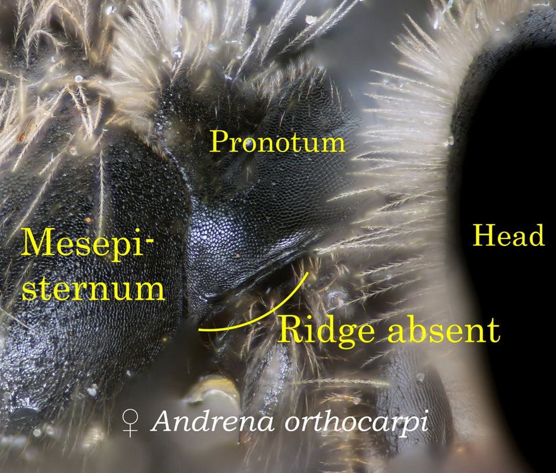
Pronotal ridge absent.
|

Pronotal ridge present. As noted, taxa with this feature will usually lack a lateral sulcus.
|
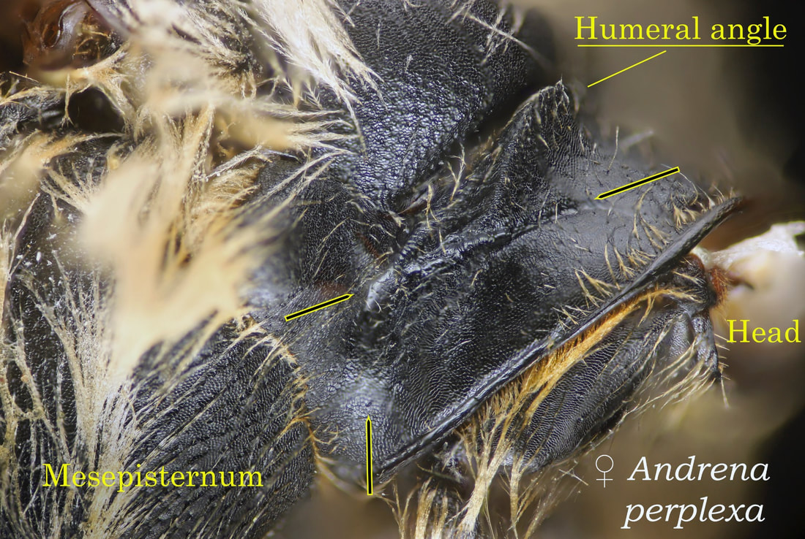
Pronotum with distinct ridge AND "deeply impressed diagonal suture."
|
8) Scutum: Dorsal area between wings
The DL key asks you to assess pit density "between the parapsidal lines, except midline," and surface texture.
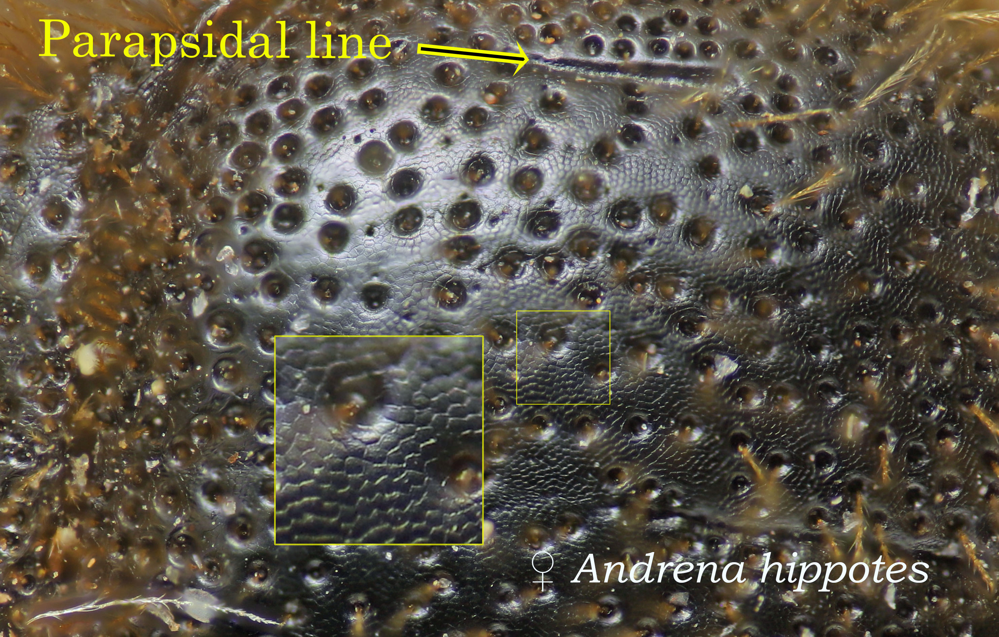
Pits 1-3 widths apart. Shows minimal shiny area posteriorally (left).
|

Pits ~3 widths apart; surface roughened/"dull."
|

Pits > 3 widths apart. Rough/tessalate and shinier areas both evident.
|
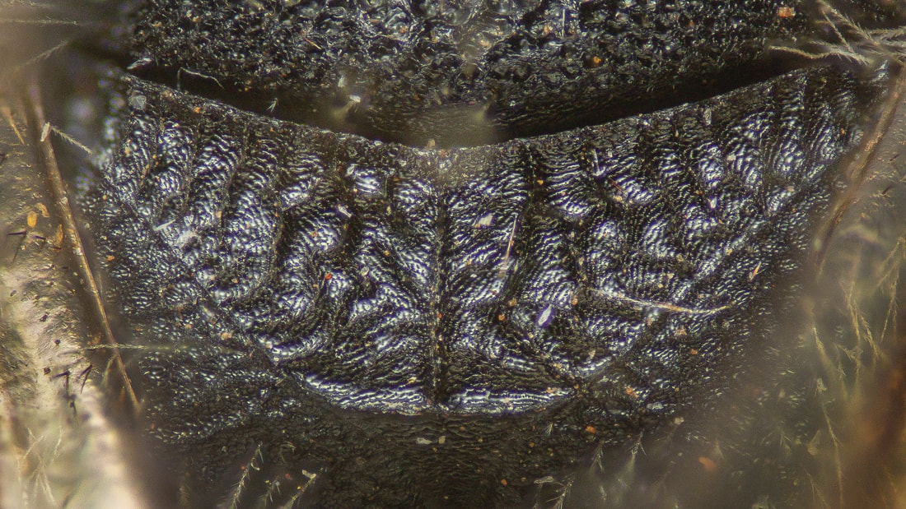
Triangle 100% sculptured. Posterior and lateral borders with definite ridge or carina. A. sigmundi.
|
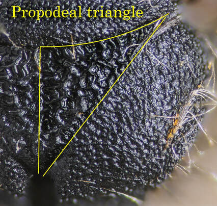
Also 100% sculptured, but carina absent. Surface outside of triangle is rugose. A. crataegi.
|
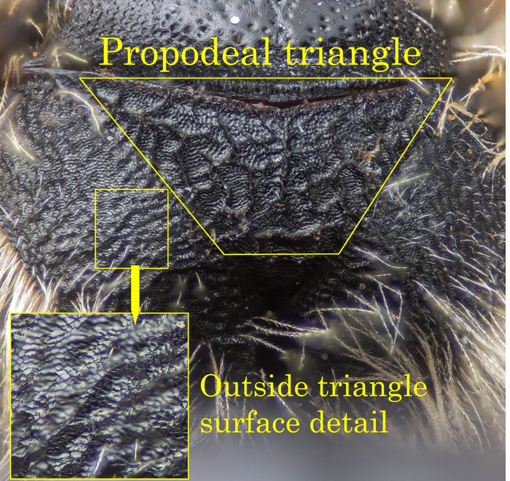
Again, 100% in triangle. No carina. Texture outside triangle "Coarsely and irregularly roughened."
|
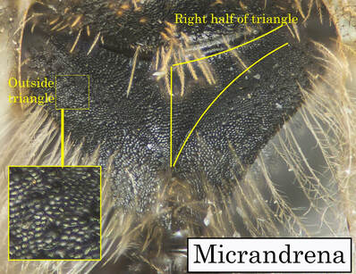
Sculpturing limited to about 10-20%, on the dorsal edge of triangle. No carina. Surface outside triangle is "areolate."
|
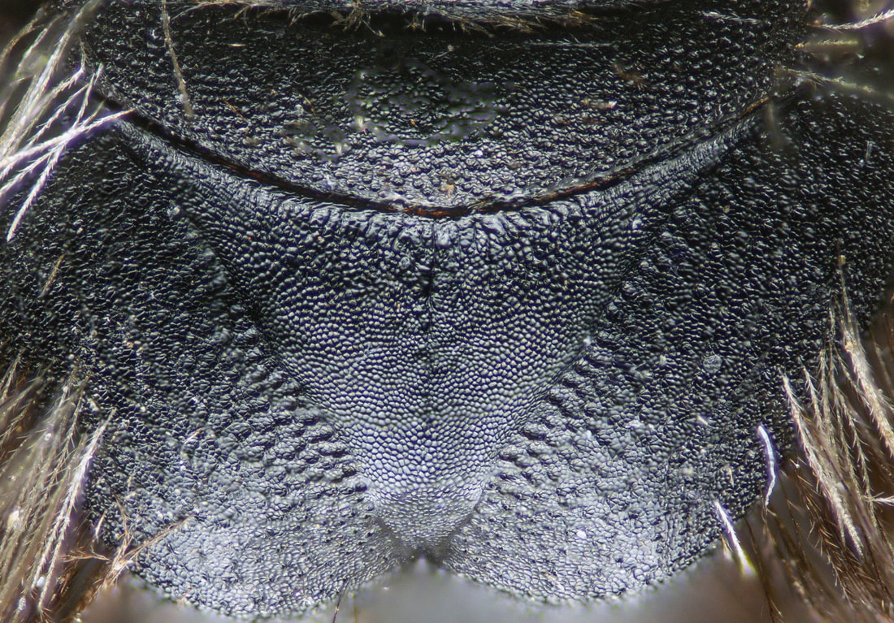
Sculpturing about 10%. A. nivalis.
|
10) Wing.
The less common traits - short r-vein or 2 submarginal cells - will narrow possibilities considerably. The vein m-cu trait is less useful - many Andrena species in DL are scored very broadly for this trait.

80% of species have 3 submarginal cells.
|
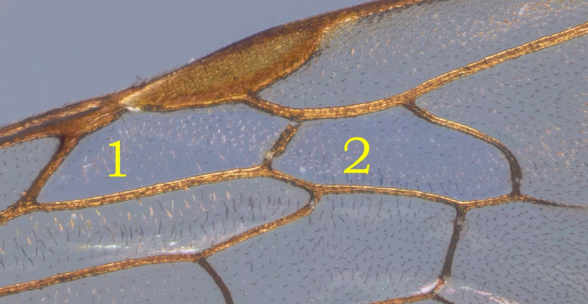
Less common: 2 submarginal cells.
|
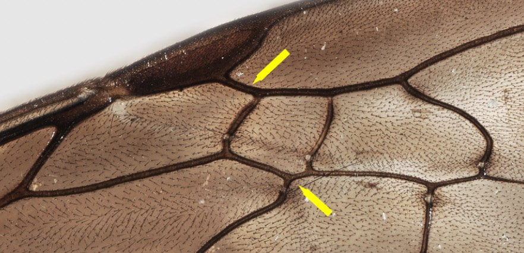
Upper arrow is the r vein, which is long - length = 4 vein widths. Lower arrow is the position at which vein m-cu meets the second submarginal cell. In this case, ~3/4 of the way distal to the base of the cell.
|
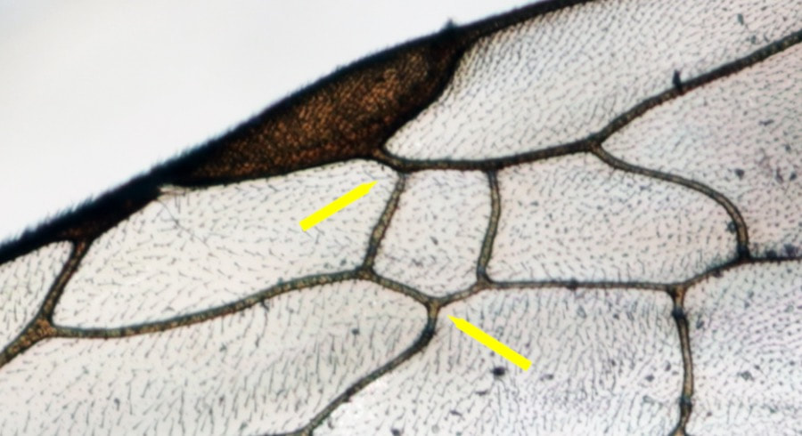
Compare to left; r vein is short, < 4 vein widths. Vein m-cu meets second SMC ~2-3 of the way distal to the base of the cell.
|
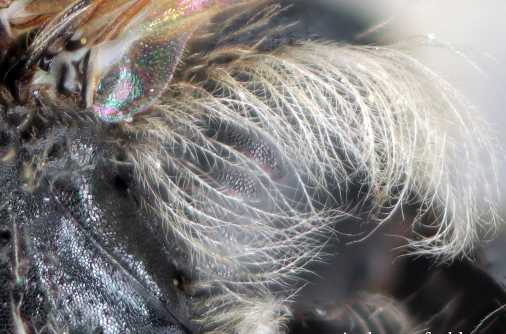
Complete corbicula, with anterior fringe of hairs, and bare interior.
|
|

An incomplete corbicula, lacking an anterior fringe. Typically these will also have internal hairs.
|

Left: weak anterior fringe; Right: internal hairs.
|
12) Pygidial plate: Hairless protrusion from tergum 6.
The pygidial plate is a sort of spatula with which bees prepare brood cells. DL differentiates two conditions, "with an internal plate or ridge," or "unmodified." Modified plates appear to take many forms, are no doubt useful ID clues, beyond DL.
13) Hind leg, trochanteral flocculus.

The curly hairs: a complete flocculus. A. barbilabris.
|

Complete flocculus.
|

An incomplete flocculus, hairs straighter, and short.
|
14) Hind tibia: shape
Tricky, because hairs tend to obscure the actual edges of the underlying integument. Best to view with back-light.
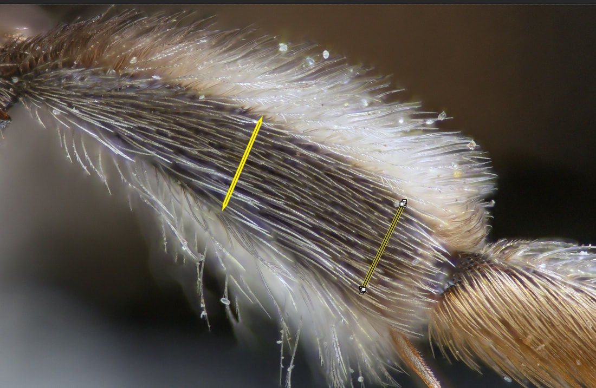
Narrow, nearly parallel-sided, scarcely broader at apex than at midpoint.
|
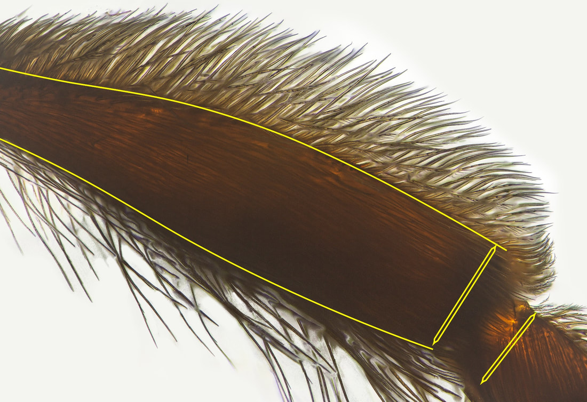
Normal, broader at apex than at midpoint, but at most 1.5 times as wide as basitarsus.
|
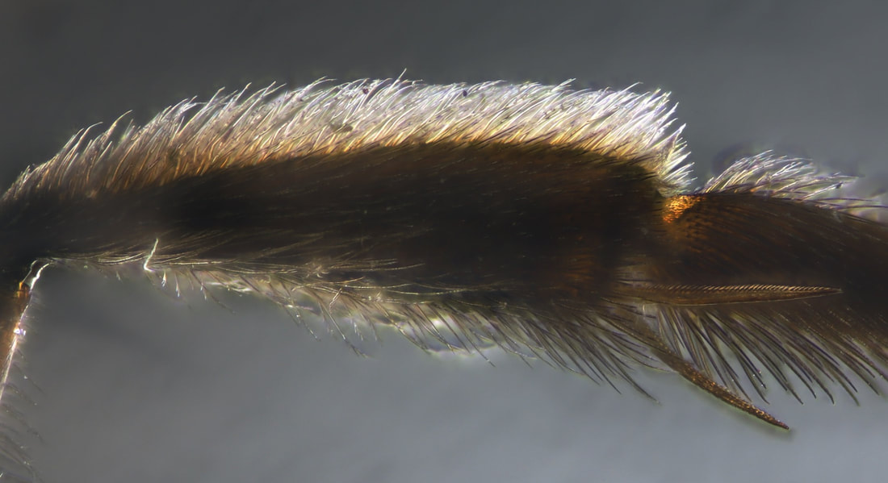
Cuneate, apex at least 1.5 times as wide as basitarsus.
|
14) Hind tibia: scopal hair formation

Hairs simple and unbranched
|

Weakly branched throughout.
|
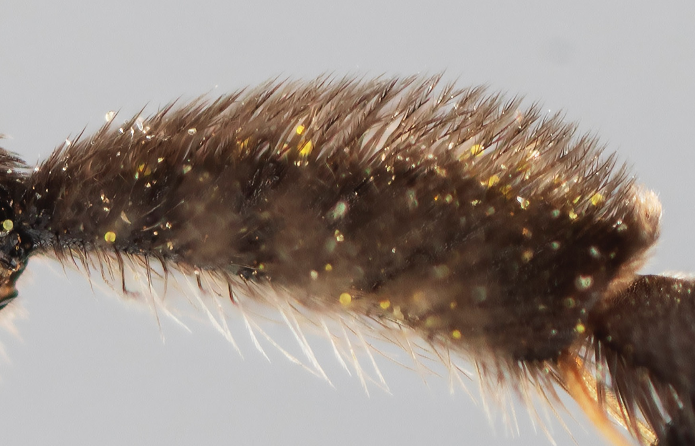
Plumose, with many branches.
|
15) Hind tibial spurs
These might deviate in several ways from the typical straight or gently curved condition. DL presents 5 options, that require interpreting "slight but obviously," "sometimes twisted," "distinctly." In the absence of clarity on this, I can only follow DL: if I have a known species, I will assume that it is correctly scored.

Normal, straight.
|

"Strongly bent at least in outer half AND broadened and flattened near base"
|

A variation on "Strongly bent at least in outer half AND broadened and flattened near base"
|

Twisted spur of A. barbilabris.
|

Hooked.
|
Examples using the DL Guide
December 2024 - I am working through the collection of the Rufus Isaacs Berry Crops Entomology Lab at Michigan State University. I am using these as tests - can I find and interpret the above traits? What else jumps out from a detailed image?
Andrena wilkella (Taeniandrena)
Easy calls, based on 1st 3 images at right:
- Michigan, 11mm;
- Clypeus dull;
- F1=F2+F3;
Incomplete corbicula;
- Tibial hairs simple;
- T2 bands narrowly interrupted; pitting dense;
- Fovea dark abve;
- Scutum dull; vertex=1ocd.
Initial result:
- A. violae
- A. cressonii
- A. brevipalpis
- A. wilkella
|

Notable: All light/tawny-orange hairs. Dense, orange scutal hairs. Malar area short. Gena narrow. Vertex> 1ocd. Long unbranched tibial hairs. Triangle roughened, not rugose.

|
There is no path in DL that clearly excludes species other than A. wilkella. So I looked at the primary literature: A Revision of the Bees of the Genus Andrena of the Western Hemisphere. Part XIII. Subgenera Simandrena and Taeniandrena (LaBerge, 1989)
"A large, readily recognized bee from North
eastern North America. The female has slightly elongated punctures
on the flattened clypeus, highly punctate metasomal terga, roug
ened but not rugulate propodeal enclosure ..."
|

Clypeus notably flat. Punctures elongate (I think). Clincher: "Labral process tra
ezoidal, slightly constricted before apex, emarginate apically, surface basad of apical teeth with fine curved rugulae, shiny;"

|
Andrena wilkella male (Taeniandrena)
Easy calls:
- Michigan, 8mm, June;
- Clypeus shiny/dull;
- Emarginate labral process;
Dark clypeus/paraocular area;
- Propodeal triangle 50% sculptured;
- T2 bands broadly interrupted; pitting indistinct; granular T2
- Clypeal hairs sparse, pitting 1-3;
- Vertex greater than 1-1.5 ocd.
Initial result:
- A. chippewaensis
- A. fulgida
- A. geranii
- BUT NOT A. wilkella
The trait conditions of A. wilkella SHOULD in fact appear among matches (when checked against the menu in DL). I.e., DL yields a false negative this case.
|

Notable: Tergae, scutum, head densely hairy.
T2: A. wilkella is scored as having dense pits, separated by less than one pit diameter. I would have called the very shallow pits here "indistinct."

|
There
Two specimens that strike me as having the same vibe.

|

Discussion: I disagree with DL about this ID, based on examination of several specimens determined by J.S. Ascher. The DL scoring is accurate, but the matching algorithm is off. This kind of mistake is surprisingly uncommon in my experience, given the complexity of a key for 521 species.
|
Andrena placata (Callandrena)
Andrena imitatrix (Scrapteropsis)
Easy calls, based on 1st 3 images at right:
- Michigan, 10mm;
- Clypeus shiny/dull;
Triangle 100%;
- Scutum w/ dense pitting;
- T2 bands broadly interrupted;
- T2 shiny, pit spacing 1-3.
Initial result:
- Andrena alleghaniensis
- Andrena imitatrix
- Andrena morrisonella
|
|

Note on image: not clear here that clypeus is shiny in center. But it is.
|

Fovea broader than antennal socket: excludes A. alleghaniensis. Also: alleghaniensis with short scutal hairs.
|

Above: Labral process emarginate [alleghaniensis bidentate, morrisonella entire or weak].
Below: "Propodeal corbicula hairs in anterior half mostly or entirely branched [simple in morrisonella].

|
Andrena carlini (Melandrena)
Easy calls, based on 2 images at right:
- Michigan, 13mm;
- Clypeus shiny/dull;
- Median impunctate band wide (vs vicina);
Scopal and cheek hairs dark;
- Complete corbicula;
- Scutm hair long; thorax pale above, dark below;
- Metasomal hairs dark; hair bands absent.
Initial result:
- Andrena carlini
- Andrena milwaukeensis
- Andrena thaspii
- Andrena vicina
|
|
|

Above: Vertex=2ocd. Excludes milwaukeensis and thaspii.
Below: Very short malar space. Only matches to A. vicina.

|
Andrena crataegi (Plastandrena)
Easy calls:
- Oregon, 12mm;
- Clypeus shiny/dull;
Triangle 100%;
- Incomplete corbicula;
- T2 pitting dense;
- Simple scopal hairs;
- Scutum shiny.
Initial result:
- Andrena amphibola
- Andrena crataegi
|
|

A. amphiloba does not match. We would expect dark hairs on the tibia, a normal tibial spur, and a fovea like Trachandrena.
|

Above: "Noted for coarse propodeum and curved and thickened inner hind tibial spur."
Below: Distinctive carinate ridge of hind femur--a crataegi thing.

|
Andrena salicifloris (Trachandrena)
Easy calls:
- Oregon, 12mm;
- Clypeus shiny, impunctate midline;
Triangle 100%, with enclosing carina;
- Incomplete corbicula;
- T2 pit spacing 1-3;
- Pale scopal hairs;
- Scutum with dense pitting;
Initial result:
- Andrena fuscicauda
- Andrena miranda
- Andrena salicifloris
All matches are subgenus Trachandrena, characterized coarse sculpturing, an entirely rugose, enclosed propodeum, and fovea narrowed at the level of the antennal socket. DL does not unamnbiguously resolve species. So I consulted A Revision of the Bees of the Genus Andrena of the Western Hemisphere. Part VI. Subgenus
Trachandrena (LaBerge). A. fuscicauda doesn't match this specimen in several respects. Differentiating miranda and salicifloris is harder.
|
|

miranda vs salicifloris:
A. salcifloris and A. miranda split on a final couplet. A. salicifloris: mesoscutum with anterior third with punctures crowded, separated
by mere ridges; vertex above lateral ocellus equals about one ocellar diameter.
A. miranda:
Mesoscutum with anterior third with punctures discrete, separated
by half to almost one puncture width; vertex above lateral
ocellus usually distinctly longer than one ocellar diameter.
My specimen appears to have crowded punctures AND a long vertex. To quote LaBerge: "There is no
doubt that misidentification of such specimens will continue and,
indeed, it is often impossible to place some in the correct species with any confidence."

|

Above: Marrow lower fovea of Trachandrena.
Below: Scutum of another specimen.

|
Andrena forbesii (Trachandrena)
Easy calls:
- Michigan, 10-12mm;
- Clypeus shiny, impunctate midline;
Triangle 100%, with enclosing carina;
- Propodeum outside triangle roughly irregular;
- Incomplete corbicula;
- Hair bands absent;
- Pale scopal hairs;
- Scutum pitting sparser than in A. salicifloris;
- Scutum texture dull;
Initial result:
- Andrena sigmundi
- Andrena miranda
- Andrena rugosa
All matches are subgenus Trachandrena, as described for A. salicifloris above. The list does not include A. forbesii, so I take issue with DL. My support for the A. forbesii diagnosis: 100 specimens from the Rufus Isaacs lab, many with J. Ascher dets.
|

Below: DL scores A. forbesii with ocellus-fovea distance greater than 1 od. In this pic, and close-up at right, the distance appears less than 1 od. If I ignore the DL score for fovea-ocellus distance, A. forbesii matches in DL.

|

Above:
Clypeal impunctate medial line indistinct. Crowded punctures below ocelli, and weak rugulae. Also, normal hind tibial spurs--excludes A. sigmundi.

|

Above: Not miranda, described as unique among this group with "Propodeum with triangle without ridged sides, boundaries indistinct, adjacent areas often sculptured nearly as coarsely as triangle." My specimens: "propodeum distinctly finer outside than inside triangle" A. miranda or A. rugosa would also have tergum 2 with depressed apical area occupying three-fourths or more of midline" (about half for my specimens).

DL comments specific to A. forbesii: Face below ocelli duller than parocular area, with weak rugulae longitudinal or lacking, with punctures separated mostly by 0.5 puncture widths or less - Vertex above lateral ocelli equals 1.5 ocellar diameters or slightly less - Scutum hairs normal, long, erect, usually slender
|
Andrena nasonii (Simandrena)
Easy calls:
- Michigan, 8mm;
- Clypeus dull;
Triangle 100%;
- Complete corbicula;
- Hind tibia cuneate, hairs short and simple;
- Wing vein r short.
Result: Andrena nasonii
|
|
|

Above: Propodeal triangle 100% sculptured; note posterior view of corbicula.
Below: Cuneate hind tibia.

|
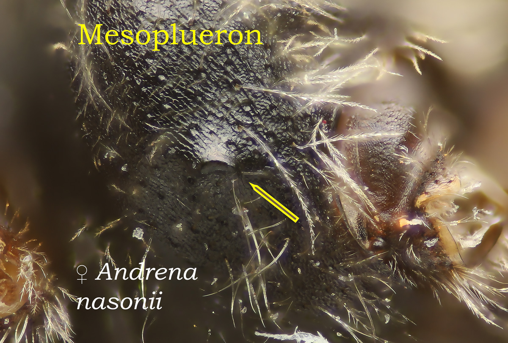
Above: Tubercle on the posterolateral edge of the mesepisternum: a nasonii thing.
Below: Same feature on male A. nasonii.

|
Andrena chlorogaster (Micrandrena)
Easy calls:
- Oregon, 7mm;
- Clypeus dull;
- Integument metallic;
T2 pits absent, granular surface;
- Pale hair bands, hairs pale,
- Labral process entire;
- Propodeal sculpturing 50+%;
- Metasomal hair bands absent;
- Corbicula incomplete.
Result: Andrena chlorogaster.
A second approach, given subgenus Micrandrena: consult key by Ribble. A. chlorogaster is consistent.
|
|
|
|
Male Andrena carolina (Andrena s. str.)
Easy calls:
- Michigan, 8mm;
- Clypeus hairs sparse; unpitted midline, pits spaced 1-3
Mandibles distinctly decussate, with weak tooth;
- Labral process emarginate;
- Cheek 2X eye width;
- Metasomal hair bands absent;
- F1 longer than F2, but not F2+3.
Initial result:
- Andrena carolina
- Andrena chippewaensis
- Andrena fulgida
These 3 species cannot be distinguished in DL. A. carolina is far more abundant, and associated with blueberries, likely the case for this specimen.
|
|

Quadrangle longer than broad. Tawny hairs. Clypeus shiny-dull, punctate except midline. Decussate mandibles. Max palp exceeds galea by 2 segments.
|

Cheek 2X as wide as eye. From DL: With distinct angle of 90 degrees or more along lower rear margin breaking the curve from top to bottom.
|

Above, from DL: UNCOMMON: With longitudinal rugulae in basal half, tessellate or smooth at apex
Below, from DL: DL: weak tooth not projecting below level of mandible articulation.

|
Andrena auricoma (Ptilandrena)
Easy calls:
- Oregon, 9mm;
- Clypeus dull;
- labral process emarginate;
Triangle 0% sculptured;
- Incomplete corbicula;
- Complete hair bands;
- T2 pitting 1-3;
- Cuneate tibia;
- Pale scopal hairs;
The overall orange coloration is notable, as is the resemblance to A. astragali, another Ptilandrena.
Initial result:
- Andrena auricoma
- Andrena bucculenta
- Andrena lutehirta
DL has no images of bucculenta or lutehirta, so overall appearance is unhelpful. A. lutehirta is scored as having a long vertex (1.5-2od), whereas this specimen has vertex less than one ocellar diameter. This specimen has 3 SMC, whereas A. bucculenta is scored as having 2SMC, a condition that excludes the subgenus of the other two options. This leaves a diagnosis of A. auricoma.
|
|

Above:
An 88 year old specimen from OSU. Note cuneate tibia.
Below:
The sculpturing here is 0% sculptured, although the surface texture is borderline. The label here indicates Euandrena. But Ptilandrena is the updated classification.

Cautionary notes: Scoring for western Andrena species is often incomplete. The LaBerge subgenus key would seem to indicate Ptilandrena as having highly plumose tibial scopae, whereas this specimen has simple hairs. However LaBerge himself contradicts this: I have images of a specimen, with det. by LaBerge, of another Ptilandrena (A. nigrihirta) with tibial scopa very similar to this specimen, with simple hairs.
|

Above: Slightly emarginate labral process.
Below: Note super-shiny tergae, sculpturing of frons.

|
Andrena astragali (Ptilandrena)
|
Shortcut: Andrena astragali forages exclusively on death camas, which is visited by no other bee.
|
|